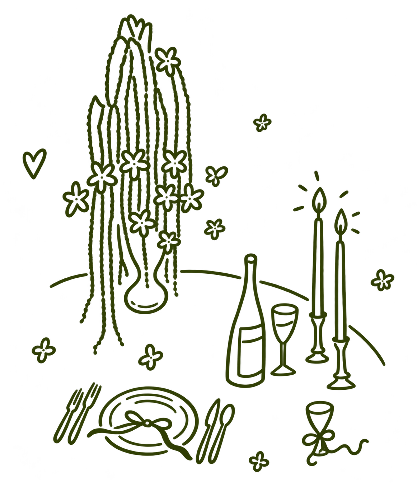
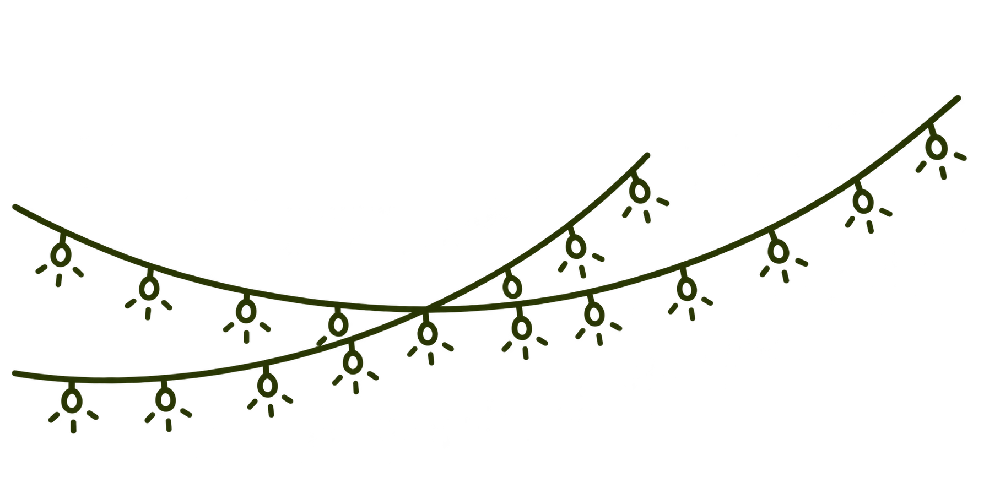
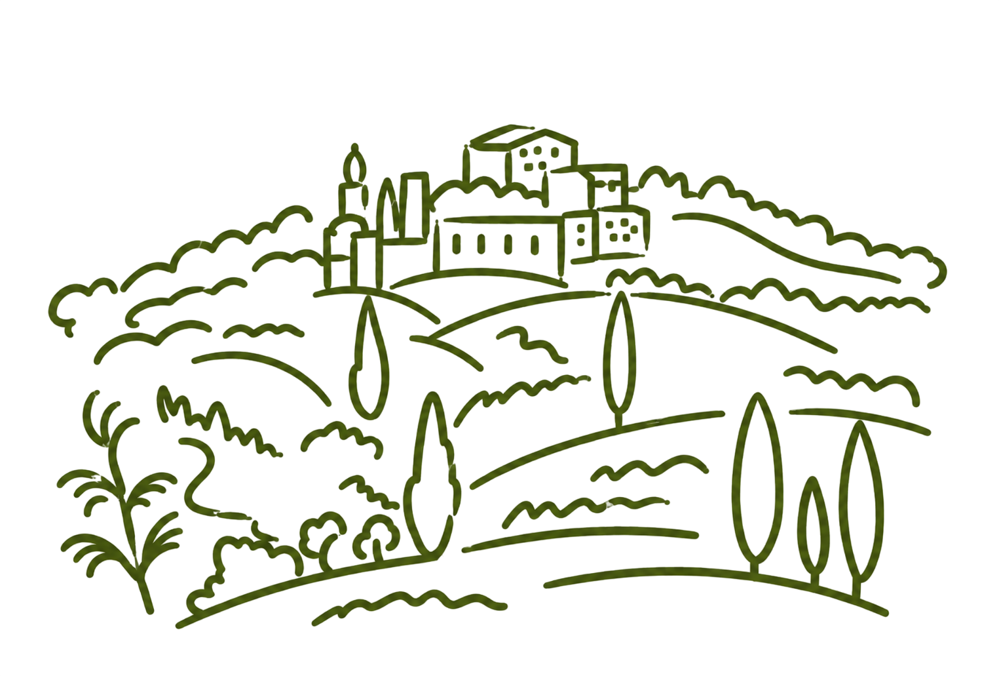
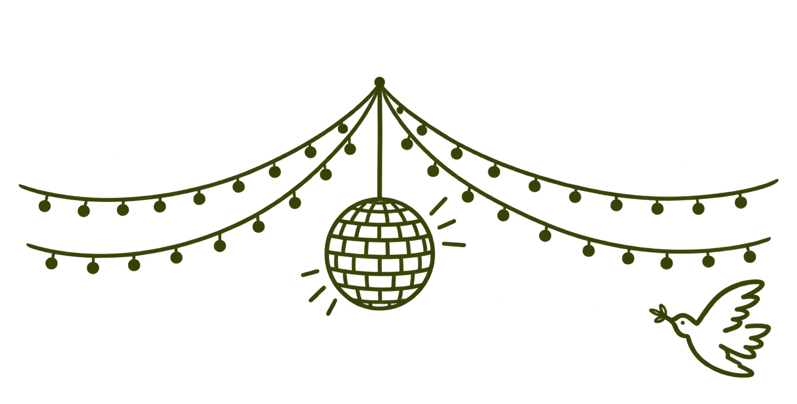

Harrera
Hika Txakolindegia
Otelarre auzoa 40, 20150 Billabona, Gipuzkoa
18:00
Mapan ikusiEzkontzera goaz

☆2027 uztailak 9

EGUN HANDIRARTE
(algo escrito aqui)


Non ospatuko dugu
❀
Harrera
Otelarre auzoa 40, 20150 Billabona, Gipuzkoa
18:00
Mapan ikusi
Lo que tenemos preparado
Nos vemos a las puertas de la parroquia, en pleno corazón de Triana
Nos daremos el sí en Santa Ana, la iglesia más antigua de Sevilla
Copas y aperitivo bajo los naranjos de la hacienda
Cena servida en el patio empedrado, al fresco de la noche
Se abre la pista y la noche sevillana hace el resto
Jamón ibérico, quesos y montaditos para cerrar la noche
Cómo llegar
Habrá autobuses desde el centro de Sevilla hasta la hacienda, y de vuelta al final de la noche. El trayecto es de unos 25 minutos.
Salida de autobuses
Sevilla — Plaza de Cuba (junto al puente de San Telmo)19:45Vuelta
05:00Hay poco aparcamiento en la hacienda: os recomendamos venir en el autobús.
Nos encantará verte
Confírmanos tu asistencia antes del 1 de agosto de 2027.